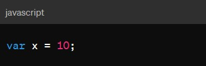
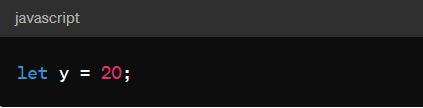
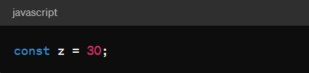

In JavaScript, variables are used to store and manage data in a program. To declare a variable in JavaScript, you can use the var, let, or const keyword. Here's an overview of each:
1.var (old way): var was traditionally used to declare variables in JavaScript. However, it has some issues, such as function-scoping instead of block-scoping
2.let (introduced in ECMAScript 6): let allows you to declare variables with block-scoping, which means the variable is only accessible within the block of code where it is defined.
3.const (introduced in ECMAScript 6): const is used to declare constants. Once a value is assigned to a constant, it cannot be reassigned.
